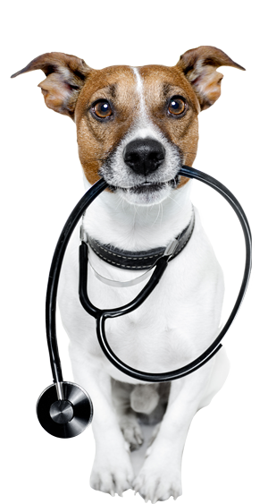

Dierenartsenpraktijk Cavilis — Kortrijk
Preventieve diergeneeskunde, vaccinatie en persoonlijke begeleiding voor hond, kat, knaagdieren en meer — in het hart van Kortrijk.
Over ons
Dierenartsenpraktijk Cavilis werd in 2015 opgericht door dierenartsen Barbara Algoet en Kevin Baeten. Wij geloven in een holistische benadering: we kijken naar uw huisdier als een geheel en maken een geïndividualiseerd behandelplan op maat.
Onze naam verwijst naar Canis (hond), Avis (vogel) en Felis (kat) — drie Latijnse woorden die onze liefde voor alle dieren weerspiegelen.
Zo voorkomt u onnodige wachttijd en stress voor uw huisdier.
Op 't Hoge in Kortrijk, met gratis parkeren en buslijn 2.
Vooral bij dringende situaties of minder mobiele huisdieren.
Wat wij doen
Grondige jaarlijkse controle en ziekte-opsporing met respect voor het welzijn van uw huisdier.
Volledig vaccinatieschema, ontworming, ontvlooiing en persoonlijk voedingsadvies.
Modern beeldvormingsmateriaal voor snelle en accurate diagnose.
Routinechirurgie en ingrepen in een veilige, gecontroleerde omgeving.
Professionele tandreiniging en mondgezondheidszorg voor hond en kat.
Verpleegdag en nazorg op de praktijk wanneer uw huisdier extra aandacht nodig heeft.
Gespecialiseerd dieetadvies en medicatiebeheer op maat van elk huisdier.
Wij komen naar woon toe wanneer uw huisdier niet naar de praktijk kan.
Eerbiedige begeleiding in moeilijke tijden, met respect voor dier en bezitter.
Bloedonderzoek, urineanalyse en andere labotesten voor snelle diagnose.
Zijn welkom
Van puppy tot seniortijd, wij begeleiden uw hond door elke levensfase.
Specialistische zorg, rekening houdend met de unieke behoeften van uw kat.
Preventieve zorg en behandeling voor konijnen, cavia's, hamsters en ratten.
Ook fretten en andere exotische huisdieren zijn bij ons in goede handen.
Veelgestelde vragen
Wij werken enkel op afspraak. Zo kunnen we er voor zorgen dat u niet lang hoeft te wachten en uw huisdier minder stress zal ondervinden tijdens de consultatie.
Neem het paspoort van uw huisdier mee (indien beschikbaar) en eventuele medische gegevens. Neem ook op wat uw huisdier at en welke medicatie het eventueel krijgt.
Bij puppy's en kittens starten we rond de 8-9 weken met een reeks vaccinaties. Daarna zijn er jaarlijkse herhalingsprikken. We stellen een planning op maat van uw huisdier.
De kosten variëren naargelang de aandoening en de behandeling. Neem contact met ons op voor meer informatie over de tarieven.
Bel naar 056 59 12 96 en u hoort welke dierenarts van wacht is. Voor niet-dringende situaties raden wij aan om tijdens de openingsuren te komen.
Ja, wij komen graag langs voor een huisbezoek. Vermeld bij het maken van uw afspraak steeds de reden van het bezoek, gezien niet alles mogelijk is op huisbezoek.
Contact
Dierenartsenpraktijk Cavilis is gelegen op 't Hoge in Kortrijk. U kunt ons bereiken per telefoon of e-mail, of gewoon langskomen tijdens de openingsuren.
't Hoge
8500 Kortrijk
Bus lijn 2 (Kortrijk station – Hoog Kortrijk), halte tegenover de praktijk. Gratis parkeren in de buurt.
🗺️
Dierenartsenpraktijk Cavilis
't Hoge, 8500 Kortrijk